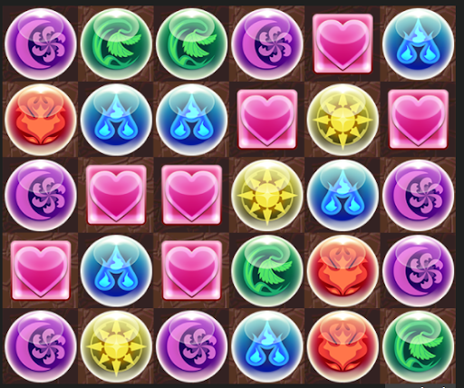
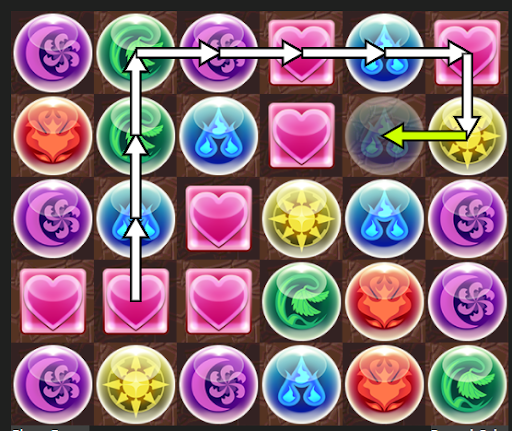

Puzzle and Dragons is a mobile game played on a touch screen where the objective is to match 3 or more orbs by drawing a path on a 6 by 5 grid of orbs. The player holds down an orb, and is given a limited time to move the orb around the grid. Each time the orb is moved, the position of the orb being held and the position of the orb at the new position are swapped. The player’s turn ends once the time to hold the orb has run out, or if the player lets go of the orb. The player achieves a number of “combos” for each match of 3 or more connected orbs made.
 Above is an example of a path that results in two combos: heart and blue.
For the sake of this project, we will be trying to maximize the number of 3-orb combos for any given board. More examples and solving strategies will be shown in the Examples tab.
We will be using the following site to simulate puzzle boards and show paths: https://candyninja001.github.io/Puzzled/
Here's an embedded version you can play with on this site.
Note: We will not be discussing optimal paths, which is a topic for machine learning/searching algorithms. Some work has been done on the subject, such as this auto solver here.
Let's take a look at some example boards, and solve them strategically. For our first example, we will look at a board where all orbs with a specific color are divisible by 3.
BoardTo solve this board, we will first match a horizontal row of three orbs in a corner. In this example, I match 3 blue orbs in the top left. Then I match the light in the top right, and match a row of green under the blue, and then create a row of hearts right under the light.
Now that the two rows on the top are solved, I begin to form columns starting from the right side. I start with a green column and move left, forming the dark and blue column. The remaining 3x3 square on the bottom left can be solved in either row form or column form by forming the row/column that is on the edge.
Solved Board.More Examples:
Board Solved Board.In the case where a fully optimal 10 combo board can't be obtained, a path that provides the highest amount of combos is the "best". In the following board, the maximum possible combos is 8, since the are 6 orbs left over (2 hearts, 2 green, 1 light, 1 blue).
BoardIn this solve, I start with the bottom two rows instead of the top two rows first, and then proceed to form columns from the right side.
Solved Board.More examples:
Board Solved Board. Board Solved Board.Boards with fewer colors can be tricker, since if orb combos consisting of 3 orbs "touch" another combo, then the combos count as 1 combo instead of two.
This counts as 1 combo. This counts as 2 combos.Therefore, to get an optimal solve in a board with 2 colors, only rows of alternating combos can be made.
Board Solved Board.Site by: Solomon Yu, Jane Li, Calum Duncan, William Ho
Created for: Math 304 Spring 2021 at SFU with Dr.Jamie Mulholland
GungHo Online Entertainment for creating the Puzzles and Dragons game.
Hiatt Leveillee and many others on github for PAD simulators.